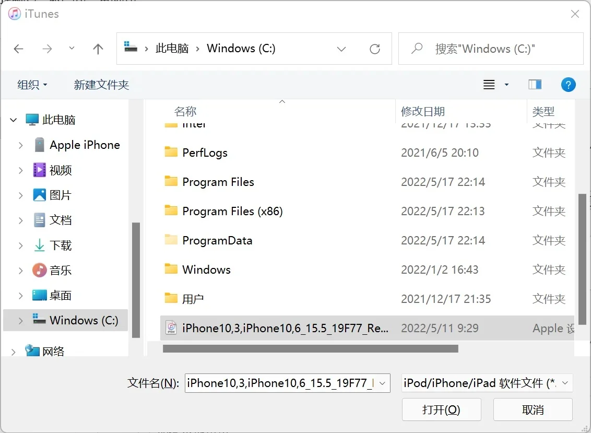

请访问原文链接：使用 “恢复模式” 来更新 iOS 固件 (Windows iTunes 版) 查看最新版。原创作品，转载请保留出处。
作者主页：sysin.org
本文对于 iOS 设备通用，即可适用于 iPhone、iPad、iPod touch。下文中描述的 iPhone，当然也可以是您的 iPad。
2024.09.18，iOS 18/iPadOS 18 发布了，同样适用。
本文是 使用 “恢复模式” 或 “DFU 模式” 来更新和恢复 iOS 固件 的 Windows 简化版，因为 iOS 用户也有使用 Windows 的特例，特多此一举增加此文。
为什么手动更新 iOS 软件，简单来类比 Windows 更新，自动更新会产生大量临时文件，可能出现卡顿或者异常。使用本方法来手动更新 iOS 软件，相当于重装系统，但是所有 App 和数据都不会丢失，可以保持系统运行在更佳状态 (sysin)。
简明步骤
-
下载 ipsw 固件：访问
https://ipsw.me/选择设备类型和机型，根据提示下载即可。 -
重启 iPhone，并使用线缆（自带的充电线）与电脑相连。
-
如果使用 Windows 10 电脑，需要下载并安装 iTunes，按住 Shift 键，点击 “更新”（或者 “检测更新”）按钮，浏览到下载的 ipsw 文件，根据提示完成更新。
就这么简单，如果需要了解一下详细步骤，看下面的描述吧。
具体步骤
1. 准备电脑和软件
(1) Windows 10（32 位或者 64 位），因 iTunes 官方要求中仅支持 Windows 10，建议使用 Windows 10 电脑。经过测试 Windows 11 也可以使用（毕竟其版本号仍然是 10），但可能存在驱动异常。
(2) 下载 iTunes 软件，现代电脑几乎都是运行 64 位的 Windows，直接下载 64-bit 的 iTunes。
如果是 32 位的 Windows 10 系统，请下载 32-bit 的 iTunes
iTunes 存档 - 百度网盘链接：https://pan.baidu.com/s/1hildAbZbBVYo9GC2jpRlCQ?pwd=72tk
(3) 下载 iOS 系统软件（或称 ipsw 固件），访问 https://ipsw.me/ 选择设备类型（iPhone 或者 iPad），然后选择具体的机型，点开可以看到 Signed IPSWs，点击出现 “Download” 按钮，下载保存即可 (sysin)。
2. 准备 iPhone
(1) 重启 iPhone：“设置” ⚙️ > 通用 > 关机，然后重新开机，确保 iPhone 运行状态良好，一次性更新成功。
重要提示，iOS 由于其可靠性极高，用户可能常年不关机重启，但这样在更新完整固件的时候容易出错，重启后可以保证不会出现异常。
(2) 确保有充足的剩余空间：“设置” ⚙️ > 通用 > iPhone 存储空间。
不同的机型和软件版本对存储空间要求有所差异，可能需要至少 5GB 及以上剩余空间，建议确保有 10GB 及以上的可用容量。
(3) 使用线缆（自带的充电线）与电脑相连。
3. 使用 iTunes 更新软件
(1) 打开 iTunes，出现 “欢迎使用” 画面，点击 “不，谢谢” 即可。
(2) 出现提示是否允许这台电脑访问 iPhone 上的信息，点击 “继续”。
(3) 此时 iPhone 提示如下，点击 “信任” 并根据提示输入密码。
(4) 通常 iTunes 会提示检测到软件更新询问是否下载，点击 “取消”。
(5) 点击如图所示的 iPhone 图标，将进入设备管理画面。
(6) 出现设备管理界面如下，此时按住 Shift 键，点击 “更新…”
备注：如果没有自动检测软件更新，这里的 “更新…” 按钮会显示 “检查更新…”，同样地按住 Shift 键同时点击 “检查更新…” 效果相同 (sysin)。
⚠️ 警告：点击 “恢复 iPhone…” 将更新软件并清空数据恢复到初始状态，谨慎操作。
(7) 浏览到之前下载的 ipsw 文件，点击 “打开”。

(8) 提示是否安装更新，点击 “更新”。
(9) 开始更新过程。
此时 iPhone 会自动重启，出现 Apple logo 的启动画面，等待十几至二十分钟左右，提示更新完成，iPhone 将自动启动，更新完毕。
(10) 查看更新结果。
可以看到 iTunes 中显示了新的 iOS 版本号，打开 iPhone “设置” -> “通用” -> “关于本机” 查看（截图略）。
屏蔽自动更新
如何屏蔽自动更新，去除更新通知和标记？
虽然现在 iOS 默认不会自动更新，但是新版本出现时，会出现顽固的数字小红点通知，没有必要更新所有小版本，通常一个大版本发布，用户体验和功能上有很大改进（流畅度可能不佳），发布到 x.5 版本时流畅度达到最佳，此后版本几乎为安全更新，除非是为了支持新发布的硬件，一般可以忽略 (sysin)。
本章节也可以参看全文：如何屏蔽 iOS 软件自动更新，去除更新通知和标记
(1) 关闭自动更新
“设置” ⚙️ > “通用” > “软件更新”，确保自动更新已经关闭。
(2) 安装配置描述文件
在 iPhone 中用 Safari 打开本页面（或者访问 详细描述页面），点击下图会提示 “此网站正尝试下载一个配置描述文件”，点击 “允许”，然后会提示 “已下载描述文件”

此时打开 “设置” ⚙️ 直接可以看到描述文件，或者 “设置” ⚙️ > “通用” > “描述文件”，点击 “安装”。提示输入密码，然后重启完成安装。
如果需要继续接收软件更新，在 “设置” ⚙️ > “通用” > “描述文件”（或者为 “描述文件与设备管理”）中可查看您所安装的描述文件。点击描述文件即可查看详细信息或者移除 (sysin)。
在 iOS 15 中，描述文件的位置略有变化：“设置” ⚙️ > “通用” > “VPN 与设备管理” 下面的 “配置描述文件”。
特色功能介绍
“实况文本” 和 “戴口罩面容解锁” 简介。
iOS 15 更新亮点中，简单说一下两个实用功能：实况文本和戴口罩面容解锁，笔者感触较深。其实新功能太多，详见 iOS 15 新功能。
(1) 实况文本（Live Text）：
即照片中的实况文本
现在，你能与所有照片中的文本内容充分互动，因此你可以使用诸如拷贝和粘贴、查询以及翻译等功能。实况文本功能适用于照片 app、截屏、快速查看、Safari 浏览器，以及用相机 app 进行的实时预览。
Live Text 支持的机型配有 A12 仿生芯片以及后续系列的 iPhone Models 即：
- iPhone XR
- iPhone XS 及以上
(2) 戴着口罩面容 ID 也好用！
有了 iOS 15.4，你即使戴着口罩，也能通过面容 ID 来轻松解锁 iPhone、使用 Apple Pay、授权 app 或输入密码。哪怕是遮住了口鼻，iPhone 也能通过分析你眼周的独有特征，来识别出你。
戴口罩面容解锁基本要求：
- 支持系统：iOS 15.4 及以上
- 支持机型：iPhone 12 及以上设备（iPhone X - 11 这些 FaceID 机型并未获得支持）

文章用于推荐和分享优秀的软件产品及其相关技术，所有软件默认提供官方原版（免费版或试用版），免费分享。对于部分产品笔者加入了自己的理解和分析，方便学习和研究使用。任何内容若侵犯了您的版权，请联系作者删除。如果您喜欢这篇文章或者觉得它对您有所帮助，或者发现有不当之处，欢迎您发表评论，也欢迎您分享这个网站，或者赞赏一下作者，谢谢！
 支付宝赞赏
支付宝赞赏
 微信赞赏
微信赞赏
赞赏一下